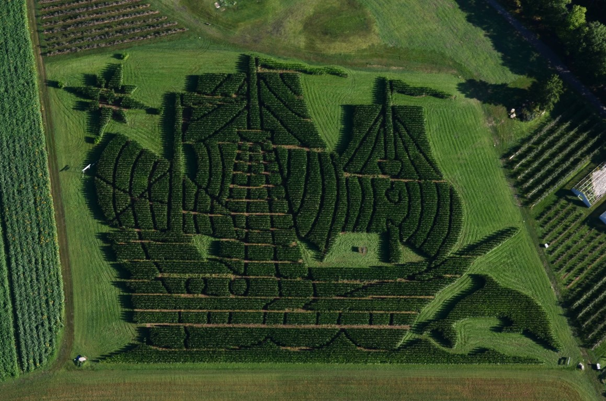
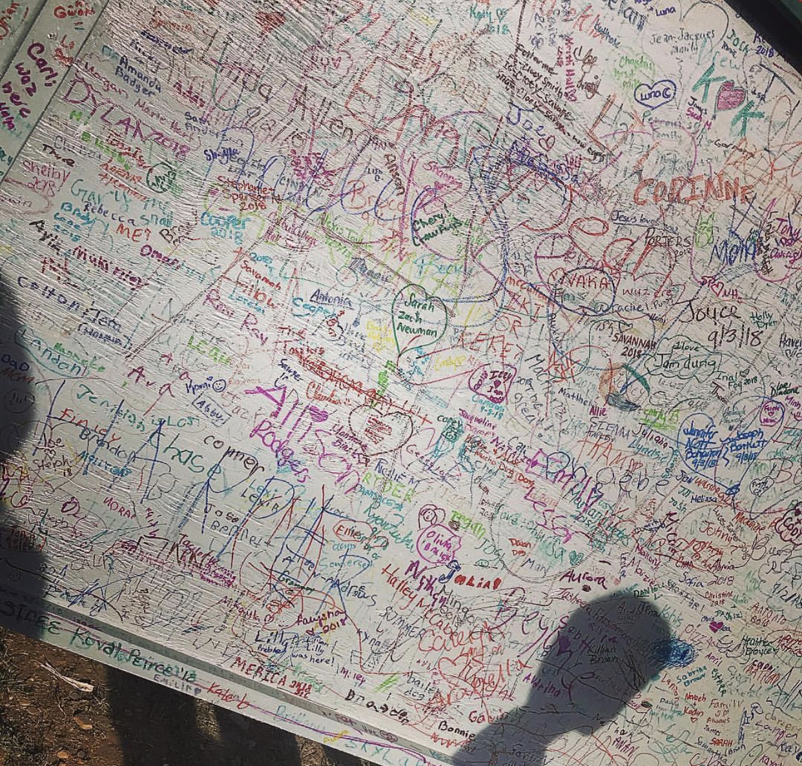

Treworgys is the BEST place to go if you're looking for a corn maze.
Treworgys is known for their extravagant corn mazes. They have the longest continually running corn maze in Maine! Each year they take on a crazy design for the maze. Last year it was Paul Bunyan, this year it's Corn Ships Ahoy!
 A map and seriers of riddles lead you through the corn maze. Make sure to make your way to the middle of the corn maze to sign the Hall Of Fame Board. To top it off, after completing the corn maze you are rewarded with a free kiddie soft serve ice cream cone!